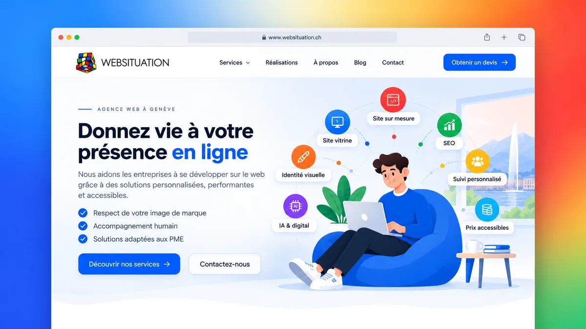

The answer is simple: your website has never been more important. As long as it is designed around your business, your customers and your goals.
At Websituation, a digital agency based in Geneva, we believe a good online presence should be neither complicated nor expensive.
And above all, that a business deserves much better than a generic website that looks like all the others.
Artificial intelligence is changing your future customers’ habits
Picture this for a moment.
Someone is looking for a tradesperson in Geneva, a consulting firm, a restaurant or a company offering a specific service.
Yesterday, they would have run a Google search, scrolled through a few results and visited several websites.
Today, they can also ask ChatGPT, use Google’s new AI search features or put a question straight to their voice assistant.
The tools change, but the need stays the same: find a reliable business, understand what it offers and know how to contact it.
That is exactly where your website plays an essential role.
It lets you present reliable, well-structured information about your business. It gives search engines and some AI tools more content to understand what you do.
Of course, having a website does not guarantee that an AI will recommend you or that you will rank first on Google. But a clear, accessible and well-built website is an important foundation for your digital visibility.
Why have a professional website in 2026?
1. Because your future customers need to be able to find you
Word of mouth is still valuable. So is social media.
But what happens when a customer hears about your business and wants to know more?
They look you up online.
And if they find no clear information, no presentation of your services and no simple way to contact you, they are likely to carry on looking elsewhere.
A professional website lets you present your business, answer the important questions and make it easy to get in touch.
Your website works for your visibility, even when you are not working.
2. Because trust begins before the first contact
Before buying a product or hiring a professional, we naturally look for reassurance.
A well-made website gives a first impression of your business.
Your story, your values, your work, your services and your contact details all help build that trust.
And that first impression can make all the difference.
A professional website is not only there to be seen. It is also there to make people want to choose you.
3. Because your business deserves its own digital identity
You have put time, energy and passion into building your business.
Why should your online presence look like your competitor’s?
A website should reflect your personality, your expertise and what makes you unique.
Colours, images, texts, navigation and tone of voice all shape that experience.
Your website should not simply look good.
It should look like you and speak to your customers.
4. Because a website can help you grow your business
A good website is more than a pretty presentation page.
It is a real sales tool.
It can let visitors request a quote, book an appointment, discover your offers, browse your work or contact you directly.
It can also support your advertising campaigns and your SEO efforts.
And unlike a social media post, whose reach depends largely on the platform’s algorithms, your website is a digital space that you can organise and develop as your needs change.
The goal is not simply to have visitors. It is to give them a good reason to become your customers.
With AI, anyone can build a website. But is that enough?
Today, several tools can quickly generate texts, designs and even entire websites using artificial intelligence.
That is a wonderful development.
But a website built quickly does not necessarily meet a business’s real needs.
AI does not automatically know your story, your customers, your ambitions or the small details that set you apart.
It can suggest a design. But is it the right one for your customers?
It can generate a text. But does it really reflect how you communicate?
It can build a page. But does that page make your visitors want to get in touch?
Technology is a powerful tool. It becomes even more valuable when it comes with strategic thinking and genuine human understanding.
At Websituation, we believe technology should serve your identity, not replace it.
Websituation: a different way to build your website in Geneva
Are you a freelancer, a craftsperson, an entrepreneur or the head of a small business?
Do you want a professional website but don’t know where to start?
Are you afraid of having to invest thousands of francs in a complicated project?
These are exactly the concerns Websituation addresses, with digital solutions suited to the needs and means of businesses.
A young, creative team close to you
At Websituation, we take a modern, dynamic and human approach.
We keep up with developments in digital, SEO and artificial intelligence to offer relevant solutions.
But our priority stays simple: understand your business before creating anything.
We want to know your activity, your customers and the values you want to convey.
Personal support, not an impersonal solution
Building a website should not mean being left alone with dozens of technical decisions.
With Websituation, you get support suited to your project and a dedicated contact person.
We favour a close relationship, simple conversations and personal follow-up.
Because our goal is not only to deliver a website.
We want to become a true partner in your digital development.
Your brand identity stays at the heart of the project
Your business has its own story.
We take the time to understand what sets you apart so we can build a digital presence that fits your image.
There is no need to overdo it.
A clear, elegant, professional website that stays true to your personality can already transform how people see your business.
Your business is unique. Your website should be too.
A professional website at an affordable price
At Websituation, we know that small businesses do not always have a large marketing budget.
Yet they deserve a quality digital presence too.
That is why we offer subscriptions with clearly displayed prices, to present your business, your services and your visual identity.
And if your ambitions call for more features, we also offer custom websites that grow with your business.
Discover our website design solutions and our different plans.
Services and conditions depend on the plan you choose.
Your website is not just another expense. It is an investment in your future.
Every business starts somewhere.
You do not need to be a big brand, have a marketing team or master the latest technologies to grow your presence online.
You simply need a solution suited to your business, your budget and your ambitions.
In the age of artificial intelligence, businesses that look after their digital identity give themselves more chances of being discovered, understood and contacted.
And the best time to build that presence is now.
What if we gave your business a new dimension together?
Do you have a project, an idea, or simply want to improve your visibility?
Let’s talk. No complicated jargon, no pressure, and a genuine ear for your needs.
At Websituation, we help you turn your ideas into a professional digital presence that looks like you.
Your business has potential. Let’s give it the visibility it deserves.
Book your free consultation with Websituation
Also discover our world at www.websituation.ch.
Websituation — Turn your ideas into success.
- The tools change (Google, ChatGPT, voice assistants), but the need stays the same: find a reliable business and know how to contact it.
- A clear, well-built website builds trust, presents your services and makes it easy to get in touch.
- AI can help build a website, but only human thinking makes it true to your identity and your customers.
FAQ
Is a website still useful in the age of artificial intelligence?
Yes. A website lets you officially present your business, your services and your contact details. It also helps make your information accessible to search engines and some artificial intelligence tools.
Does a small business really need a website?
Even a small business can benefit from a professional website. It builds trust, presents your services and lets you receive enquiries without relying only on social media.
How much does a professional website cost in Geneva?
The price depends on the number of pages, the features and the services you want. At Websituation, prices are displayed openly and several subscription plans cover needs from simple to more advanced.
Why use a web agency rather than build your site with AI?
AI tools can be very useful for building a website, but an agency can offer human support, thinking about your brand identity, personal advice and long-term follow-up.
How long does it take to build a website?
It depends on the complexity of the project and the content to prepare. A simple showcase site generally takes less work than an e-commerce site or a custom platform. Websituation can assess your needs with you during a first conversation.


A website or visibility project?
A free first call to look at your needs and your budget.
Book a call